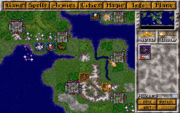
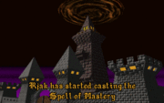
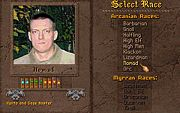
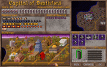
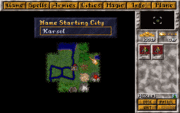
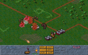
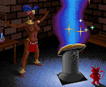
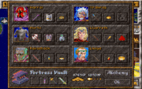
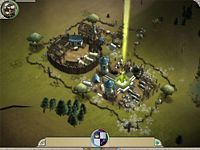

Просто скриншот на Арканусе
Master of Magic — в свое время (а для некоторых — до сих пор) культовая игра в жанре пошаговой стратегии, созданная компанией MicroProse. Состоит в близком родстве с «Цивилизацией» и «Master of Orion», выпущенными той же конторой, отличаясь главным образом антуражем.

Когда кто-нибудь начинает зачитывать Spell of Mastery, всех остальных об этом оповещают
Победить врагов, коих в зависимости от настроек будет от 1 до 4. Сделать это можно двумя способами: грубой силой, то есть банально отвоевывая территории и физически уничтожая вражеских правителей, и специальным заклинанием Spell of Mastery, которое крайне долго учится, стоит сотни волшебной силы и, как правило, довольно долго запускается. Однако, если вам удалось его произнести, врагам уже ничто не поможет. Который из способов использовать — полностью дело вкуса, поскольку, в большинстве случаев, если вы выучили Spell of Mastery, то к этому моменту уже можете и поубивать врагов просто так. Враги тоже учат Spell of Mastery и могут пытаться его применить.

Генерация колдуна
Аналогично Цивилизации и Ориону в MoM воплощением игрока является правитель империи. Поскольку игрушка про магию, то император — колдун. При создании своего воплощения в мире MoM игрок может выбирать следующие параметры:

Столица колдуна на Myrror
Игровое пространство состоит из двух круглых ограниченных цилиндрических миров: Arcanus, приблизительно похожий на Землю, и Myrror, похожий на Землю после магически-ядерного удара. Сходство заключается в том, что на Арканусе все зеленое, приятное для глаза и жить более-менее можно, а на Мирроре трава коричневая, деревья черные и повсюду монстры пачками. Однако именно там обитают наиболее крутые мутанты (игровые расы), попадаются наиболее крутые артефакты и вообще отовсюду прет магия, что и наводит, в том числе, на мысли о рванувшем магоядреном коллайдере.
Арканус и Миррор связаны между собой взаимно-однозначным изометрическим портальным отображением, то есть, чтобы не вдаваться в словоблудие, можно сказать, что мир MoM двухэтажный, и имеются дырки с нижнего этажа на верхний и наоборот. Который из планов считать верхним, а который нижним — полностью дело вкуса.
Экономической единицей в игре является город. В городе можно строить всяческие строения (конкретный набор зависит от расы населения), увеличивающие вырабатываемые городом жратву, деньги, ману, рисерч-пойтны и позволяющие откармливать в городе те или иные виды войск. Можно строить новые города (на определенном расстоянии от уже имеющихся (Но это реально тупо: чтобы отожраться до размеров города, деревне надо долго и печально строить домики. Проще захватывать города анархистов)), вражеские города можно захватывать или разрушать нафиг.

Начало игры
Вы начинаете игру с одной практически неотстроенной деревни, двух отрядов самых слабых войск выбранной расы, а главколдун знает всего несколько завалящих заклинаний. В том же положении начинают и противники. Почти всегда недалеко от вашего стартового города имеются независимые города, где вас терпеть не могут, а также всяческие гадюшники, откуда временами вылезают монстры и грабят ваши города и города противника. Предстоит покорить или снести нафиг враждебные города, прочистить монстрячьи логова, попутно извлекая оттуда разного рода добычу, построить новые города, а также изучать и изучать (и применять) новые заклинания из своих книг и, разумеется, со временем сражаться с другими колдунами, которые в меру своего тупого AI стараются вас догнать и перегнать (и нередко им это удается).

Боевка. Хаос жжот
С вражескими колдунами можно меняться заклинаниями, если у вас есть книжки общих цветов. Есть также возможность заключать договоры о ненападении, союзы, и даже стравливать противников друг с другом, но толку от этого обычно крайне мало, поскольку у AI весьма своеобразное представление о соблюдении оных договоров.
Воевать можно обычными войсками, которые производятся в ваших городах (также иногда можно нанять наемников постороннего происхождения), героями и магически вызванными тварями. Причём боевым юнитам считается экспа, и со временем они становятся всё круче. Многие твари впечатляют, но для их вызова нужно изучить соответствующие заклинания, кроме того, вызов и содержание сильных монстров стоят до хрена маны, так что более слабые обычные войска нередко оказываются предпочтительнее. Впрочем, всё зависит от ситуации.
Стоит упомянуть, что в ряде случаев «обычные» войска (т. н. «normal unit») могут быть много круче высокоуровневых призванных. В качестве примера можно привести людских паладинов, выносящих все живое и мертвое, но шевелящееся, по достижении опытности «Ultra elite». Это, кстати, существенно облегчало игру за людей вплоть до дисбаланса. Самой убойной же силой являются пращники-хоббиты, на которых наложили заклинание «Lionheart» (лучше всего также уровня «Elite» и выше).
В MoM всего 6 видов магии, каждый из которых обладает своими плюшками. В целом система во многом похожа на расовую буржуйскую настольную игру «Magic the Gathering», но есть нюансы.

Нигра c сиськами выучила новое заклинание. Справа виден чёрт из FreeBSD
Заклинания разделены по сферам («школам») магии. Именно эти сферы выбираются перед началом игры в виде комплекта книжек.

Герои и их шмотье. И, да, Варракс тоже здесь.
Помимо обычных юнитов войск типа мечников, лучников, кавалерии и всяких вызванных тварей, в игре имеется такой специфический вид войск, как герои. Герои приходят наниматься сами (случайным образом) или же могут быть вызваны специальным общедоступным заклятьем (на вызов появляется случайно выбранный герой). Только что вылупившиеся герои весьма слабы, но они могут набирать экспу и разжираться со временем до крутизны просто непотребной. Также им можно давать магические шмотки, существенно повышающие их крутость. В MoM имеется изрядное количество (кажется, что-то около 40-а) разных героев, различающихся наборами своих способностей, коих куча: они умеют драться, колдовать, стрелять из лука или магическими снарядами, могут тренировать обычные войска, помогать им в плане ускоренного перемещения, могут даже давать главколдуну деньги и помогать в изучении заклинаний, а также еще много чего. Набор способностей у каждого героя свой, есть крутые, а есть практически бесполезные.
В один момент времени можно иметь не более 6 героев.
Также при правильном подборе героев[2][3] и их вдумчивом апгрейде шмотьем[4] можно вести все боевые действия только ими без применения обычных войск и тварей. Я гарантирую это.
Грабить корованы в МоM, к сожалению, нельзя[5]. Но нечто корованной тематики в игре все-таки присутствовало, по крайней мере до финального патча: в MoM есть юнит Settlers (для основания новых городов), внешне здорово напоминающий корован. Когда оный юнит (в исполнении врагов) въезжал из города, расположенного вплотную к Tower of Wizardry (башня-портал, связывающая планы), на эту башню, происходила фатальная ошибка, и игра вылетала. Вследствие этого приходилось отслеживать и истреблять вражеские города, построенные вплотную к башням. Однако финальным патчем этот глюк исправлен.
Имелся и второй эпичный корованный глюк, тоже пофикшенный патчем: уничтожение первого (именно первого) построенного врагом outpost’а (то, что строится «корованом», и для превращения в полноценный город ему требуется насколько ходов) приводило к мгновенной и бесповоротной кончине соответствующего колдуна. Благодаря этому практиковалось следование своими войсками за первым вражеским корованом и уничтожение аутпоста, как только он построится. Это давало хороший шанс выжить в игре (обычно, если вражеская столица оказалась настолько близко от твоей, что есть возможность засечь первый «корован», выжить проблематично, как минимум обеспечена непрерывная нервотрепка на длительный период).

Вот это чудо может таки стать новым МоМ.
Геймеры долго ждали появления MoM2 по аналогии с w:Master of Orion II, но так и не дождались. Со временем другие конторы начали клепать продукты, неявно претендующие на бытийность как бы чем-то «по мотивам». Среди этих изделий есть как полные глюков кошмары (главным образом благополучно позабытые), так и вполне годные игрушки (к таковым относятся, к примеру, игры серии «w:Age of Wonders».)
Также стоит отметить тот факт, что игру не только помнят до сих пор, но и до сих пор молятся о её возвращении с того света, как например это происходило и происходит с X-COM (вернее, не так, как это происходит с X-Com) или Total Annihilation. Фанаты пытаются возродить игру самопалом, не дожидаясь от геймдева подачек, однако до уровня играбельности TA Spring или UFO: Alien Invasion ни один проект не дотянул до сих пор, увы.
Компания Stardock же, известная свей серией Galаctic Civilizations, сварила натуральное продолжение-ремейк MoM под гордым названием Elemental — War of Magic. Все то же самое — только больше, красивше, стратегишней. Это по заявлениям StarDock’овцев. Вышла 24 августа 2010 года, тут же была взломана и теперь все могут насладиться её багами и корявой графикой. Геймплей же оказался казуальным, как в той же стардоковской Sins of a Solar Empire и GalCiv. Печально.